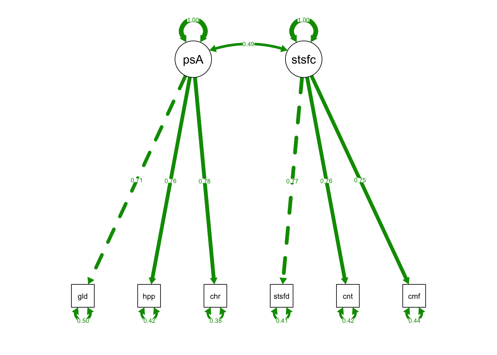
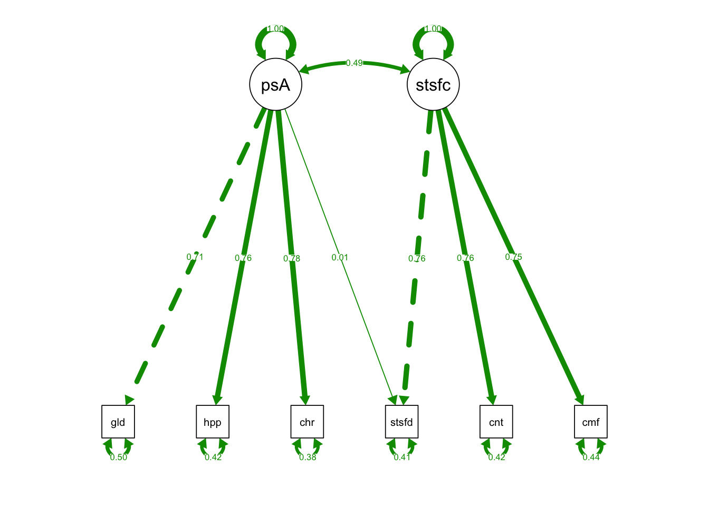

Chapter 12 Week10_2: Lavaan Lab 9 Model Fit Part I (Test Statistics)
In this lab, we will learn:
- how to calculate and interpret chi-square statistics for SEM models.
- how to compare nested models using chi-square difference test.
Load up the lavaan and semPlot libraries:
library(lavaan)
library(semPlot)12.1 PART I: Robust ML on the Positive Affect Example
Let’s read this dataset in:
cfaData<- read.csv("cfaInclassData.csv", header = T)Write out syntax for a two-factor CFA model:
fixedIndTwoFacSyntax <- "
#Factor Specification
posAffect =~ glad + happy + cheerful
satisfaction =~ satisfied + content + comfortable
"Fit the model regularly:
fixedIndTwoFacRun = sem(model = fixedIndTwoFacSyntax,
data = cfaData,
fixed.x=FALSE)
fixedIndTwoFacRun## lavaan 0.6-10 ended normally after 24 iterations
##
## Estimator ML
## Optimization method NLMINB
## Number of model parameters 13
##
## Number of observations 1000
##
## Model Test User Model:
##
## Test statistic 2.957
## Degrees of freedom 8
## P-value (Chi-square) 0.937- Model chi_sq: misfit defined through the likelihood ratio.
- T_ML = 2.957
- df_ML = 8
- pvalue_ML = 0.937
- Since pvalue_ML > 0.05, this model does not have significant model misfit.
12.1.1 Mean corrected statistic (T_M)
Satorra and Bentler (1994, 2001) proposed two robust corrections for non-normally distributed data:
two_fac_fit_M <- sem(fixedIndTwoFacSyntax,
data = cfaData,
fixed.x=FALSE,
estimator = "MLM")
two_fac_fit_M## lavaan 0.6-10 ended normally after 24 iterations
##
## Estimator ML
## Optimization method NLMINB
## Number of model parameters 13
##
## Number of observations 1000
##
## Model Test User Model:
## Standard Robust
## Test Statistic 2.957 2.891
## Degrees of freedom 8 8
## P-value (Chi-square) 0.937 0.941
## Scaling correction factor 1.023
## Satorra-Bentler correction- T_M = 2.891
- df_M = 8
- pvalue_M = 0.941
12.1.2 Mean and variance adjusted statistic (T_MV)
- estimator = “MLMVS” returns the Mean- and variance adjusted statistic with an updated degrees of freedom (recommended)
- estimator = “MLMV” returns another version of Mean- and variance adjusted statistic but does not change the degrees of freedom
two_fac_fit_MV <- sem(fixedIndTwoFacSyntax,
data = cfaData,
fixed.x=FALSE,
estimator = "MLMVS")
#summary(two_fac_fit_MV, standardized = T)
two_fac_fit_MV## lavaan 0.6-10 ended normally after 24 iterations
##
## Estimator ML
## Optimization method NLMINB
## Number of model parameters 13
##
## Number of observations 1000
##
## Model Test User Model:
## Standard Robust
## Test Statistic 2.957 2.842
## Degrees of freedom 8 7.864
## P-value (Chi-square) 0.937 0.939
## Scaling correction factor 1.041
## mean and variance adjusted correction- T_MV = 2.842
- df_MV = 7.864
- pvalue_MV = 0.939
Please see a complete list of estimators here: http://lavaan.ugent.be/tutorial/est.html
12.1.3 Yuan-Bentler test statistic (T_MLR)
Just like T_M and T_MV, T_MLR also corrects for nonnormality. Since MLR works for both complete and incomplete data, T_MLR is more popular in practice:
two_fac_fit_MLR <- sem(fixedIndTwoFacSyntax,
data = cfaData,
fixed.x=FALSE,
estimator = "MLR")
two_fac_fit_MLR## lavaan 0.6-10 ended normally after 24 iterations
##
## Estimator ML
## Optimization method NLMINB
## Number of model parameters 13
##
## Number of observations 1000
##
## Model Test User Model:
## Standard Robust
## Test Statistic 2.957 2.897
## Degrees of freedom 8 8
## P-value (Chi-square) 0.937 0.941
## Scaling correction factor 1.021
## Yuan-Bentler correction (Mplus variant)- T_MLR = 2.897
- df_MLR = 8
- pvalue_MLR = 0.941
12.2 PART II: Nested Model Comparison
We can compare the fit of the two-factor model to that of a one-factor model because the one-factor model is nested in the two-factor model.
12.2.1 One-factor model
OneFacSyntax <- "
#Factor Specification
eta1 =~ glad + happy + cheerful + satisfied + content + comfortable
"
one_fac_fit = sem(model = OneFacSyntax,
data = cfaData,
fixed.x=FALSE) request standardized = T to check standardized loadings - item reliability
summary(one_fac_fit, standardized = T)## lavaan 0.6-10 ended normally after 31 iterations
##
## Estimator ML
## Optimization method NLMINB
## Number of model parameters 12
##
## Number of observations 1000
##
## Model Test User Model:
##
## Test statistic 592.661
## Degrees of freedom 9
## P-value (Chi-square) 0.000
##
## Parameter Estimates:
##
## Standard errors Standard
## Information Expected
## Information saturated (h1) model Structured
##
## Latent Variables:
## Estimate Std.Err z-value P(>|z|) Std.lv Std.all
## eta1 =~
## glad 1.000 0.505 0.514
## happy 1.048 0.086 12.192 0.000 0.529 0.542
## cheerful 1.070 0.087 12.299 0.000 0.540 0.550
## satisfied 1.422 0.101 14.117 0.000 0.718 0.712
## content 1.526 0.108 14.108 0.000 0.770 0.711
## comfortable 1.296 0.093 13.903 0.000 0.654 0.688
##
## Variances:
## Estimate Std.Err z-value P(>|z|) Std.lv Std.all
## .glad 0.711 0.035 20.410 0.000 0.711 0.736
## .happy 0.673 0.033 20.096 0.000 0.673 0.706
## .cheerful 0.675 0.034 20.001 0.000 0.675 0.698
## .satisfied 0.500 0.030 16.648 0.000 0.500 0.493
## .content 0.579 0.035 16.684 0.000 0.579 0.494
## .comfortable 0.475 0.027 17.380 0.000 0.475 0.526
## eta1 0.255 0.033 7.841 0.000 1.000 1.000- Only the last three standardized loadings are larger than 0.6
- The first three indicators are not reliable indicators of the new latent variable eta1
Model Test User Model:
Test statistic 592.661
Degrees of freedom 9
P-value (Chi-square) 0.000- The chi-square statistic is very large and significant for this one-factor model…poor fit
12.2.2 Plotting
semPaths(fixedIndTwoFacRun, what = "std", fade= F)
semPaths(one_fac_fit, what = "std", fade= F)
12.2.3 Comparing Nested Models
- The one-factor model is nested in the two-factor model.
- The fit of the one-factor model is worse than the two-factor model, but is it significantly worse?
- Here we use anova() function to perform chi-square difference test
- Note that the order of the models in anova() doesn’t matter
anova(one_fac_fit, fixedIndTwoFacRun)## Chi-Squared Difference Test
##
## Df AIC BIC Chisq Chisq diff Df diff Pr(>Chisq)
## fixedIndTwoFacRun 8 14992 15056 2.9575
## one_fac_fit 9 15580 15639 592.6611 589.7 1 < 2.2e-16 ***
## ---
## Signif. codes: 0 '***' 0.001 '**' 0.01 '*' 0.05 '.' 0.1 ' ' 1Chi-Squared Difference Test
Df AIC BIC Chisq Chisq diff Df diff Pr(>Chisq)
fixedIndTwoFacRun 8 14992 15056 2.9575
one_fac_fit 9 15580 15639 592.6611 589.7 1 < 2.2e-16 ***
---
Signif. codes: 0 ‘***’ 0.001 ‘**’ 0.01 ‘*’ 0.05 ‘.’ 0.1 ‘ ’ 1- The model on top is the base model and the model at the bottom is the restricted model.
- The restricted model always fits worse than the base model.
- Chisq diff = 589.7; Df diff = 1; p-value < 0.001
- Chisq diff is sig: one-factor fits significantly worse than the two-factor model and we should endorse two-factor model
12.3 PART III: Exercises: More Nested Models
Your turn now, Have fun!
12.3.1 Exercises: Compare the base model (fixedIndTwoFacRun) to
- (Model 2) 2-factor CFA model with orthogonal latent variables
- (Model 3) 2-factor CFA model with a cross-loading from posAffect to satisfied
- (Model 4) 2-factor CFA model with a correlation between unique factors u1 and u4
12.3.2 Model 2: Orthogonal Factors
OrthFacSyntax <- "
#Factor Specification
posAffect =~ glad + happy + cheerful
satisfaction =~ satisfied + content + comfortable
#Orthogonal Factors: no covariance
posAffect ~~ 0*satisfaction
"Fit Model 2:
OrthFac_fit <- sem(model = OrthFacSyntax,
data = cfaData,
fixed.x = F)Plot Model 2:
semPaths(OrthFac_fit, what = "std", fade= F)
chi-square difference test:
anova(fixedIndTwoFacRun, OrthFac_fit)## Chi-Squared Difference Test
##
## Df AIC BIC Chisq Chisq diff Df diff Pr(>Chisq)
## fixedIndTwoFacRun 8 14992 15056 2.9575
## OrthFac_fit 9 15156 15215 168.4731 165.52 1 < 2.2e-16 ***
## ---
## Signif. codes: 0 '***' 0.001 '**' 0.01 '*' 0.05 '.' 0.1 ' ' 1- Chisq diff = 165.52; Df diff = 1; p-value < 0.001
- Chisq diff is sig: the two-factor model with orthogonal latent variables fits significantly worse than the model with correlated latent variables.
- We should endorse the base two-factor model with correlated latent variables.
12.3.3 Model 3: Cross loading
CrossLoadingSyntax <- "
#Factor Specification
# cross loading: satisfied load on both latent variables
# try to avoid using satisfied as the marker variable
posAffect =~ glad + satisfied + happy + cheerful
satisfaction =~ satisfied + content + comfortable
"Fit Model 3:
CrossLoading_fit <- sem(model = CrossLoadingSyntax, data = cfaData, fixed.x = F)Plot Model 3:
semPaths(CrossLoading_fit, what = "std", fade= F)
chi-square difference test:
anova(fixedIndTwoFacRun, CrossLoading_fit)## Chi-Squared Difference Test
##
## Df AIC BIC Chisq Chisq diff Df diff Pr(>Chisq)
## CrossLoading_fit 7 14994 15063 2.9050
## fixedIndTwoFacRun 8 14992 15056 2.9575 0.052477 1 0.8188- Chisq diff = 0.052477; Df diff = 1; p-value = 0.8188
- Chisq diff is not sig: the two-factor model without the cross-loading is NOT significantly worse than the model with the cross-loading.
- The cross-loading is not necessary.
- We should endorse the base two-factor model without the cross-loading.
12.3.4 Model 4: Correlated Unique Factors
CorrUniSyntax <-"
#Factor Specification
posAffect =~ glad + happy + cheerful
satisfaction =~ satisfied + content + comfortable
# correlated error
glad ~~ satisfied
"Fit Model 4:
CorrUni_fit <- sem(model= CorrUniSyntax, data = cfaData, fixed.x = F)Plot Model 4:
semPaths(CorrUni_fit, what = "std", fade= F)
chi-square difference test:
anova(fixedIndTwoFacRun, CorrUni_fit)## Chi-Squared Difference Test
##
## Df AIC BIC Chisq Chisq diff Df diff Pr(>Chisq)
## CorrUni_fit 7 14993 15062 1.6343
## fixedIndTwoFacRun 8 14992 15056 2.9575 1.3232 1 0.25- Chisq diff = 1.3232; Df diff = 1; p-value = 0.25
- Chisq diff is not sig: the two-factor model without the correlated unique factors is NOT significantly worse than the model with the correlated unique factors.
- The correlation between u1 and u4 is not necessary.
- We should endorse the base two-factor model without the correlated unique factors.